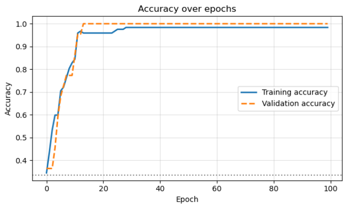
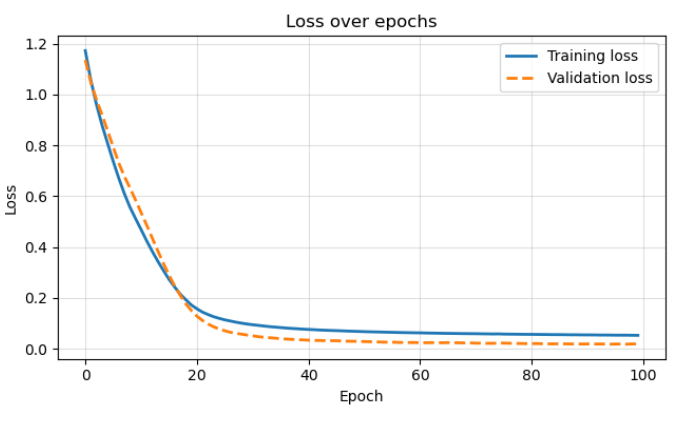
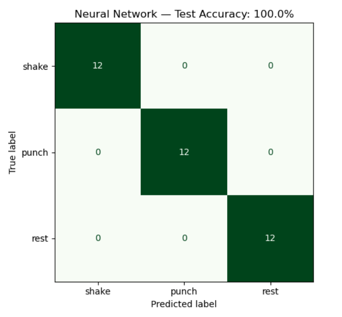
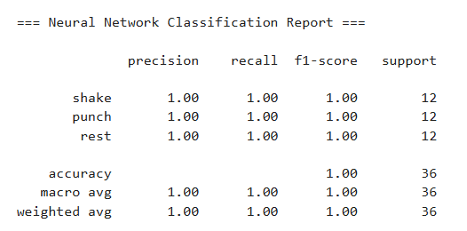
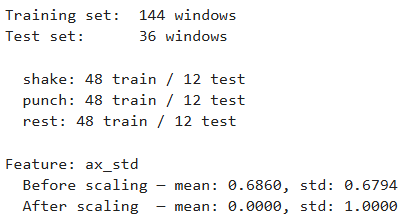
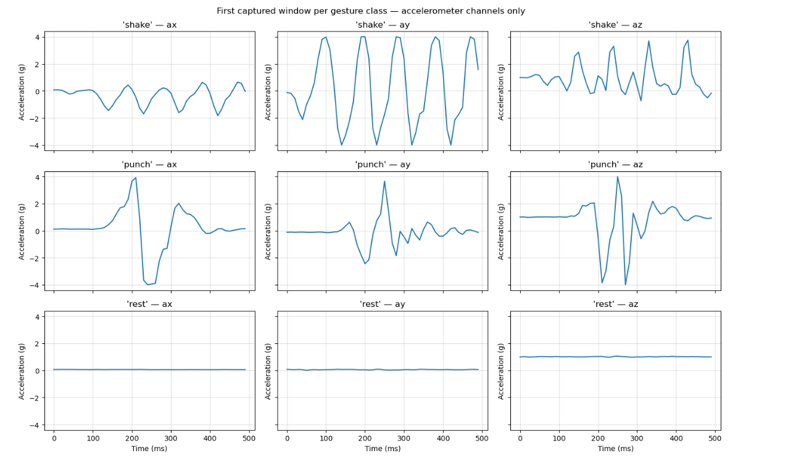
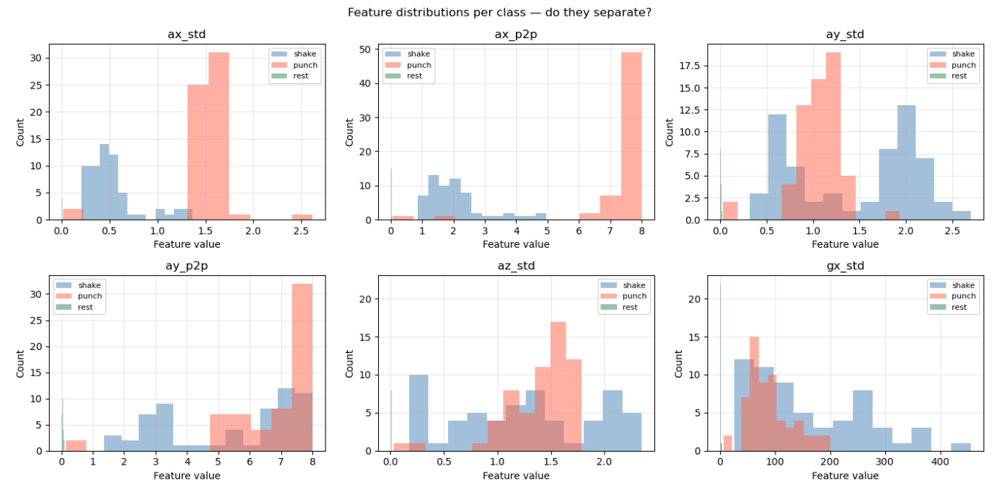
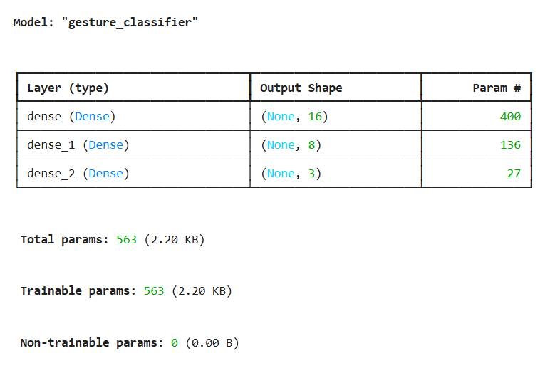
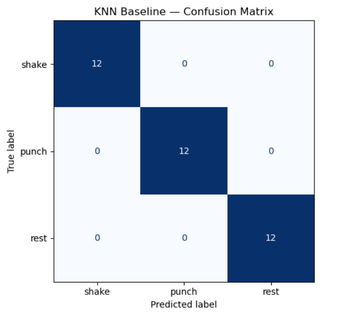
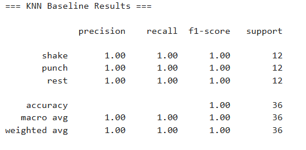

This project focused on classifying simple IMU-based gestures using motion data collected from an Arduino Nano 33 BLE Sense. It demonstrates how wearable sensors and machine learning can interpret movement patterns from real-world time-series data.




Objective
The goal was to build a sensor-based classification system capable of recognizing movement patterns using motion-based data. The project used IMU data to classify basic gestures and introduced a practical workflow for collecting, labeling, processing, and evaluating sensor data.
IMU Gesture Recognition
The first version used the onboard IMU on an Arduino Nano 33 BLE Sense to collect acceleration and gyroscope data. The system classified three gesture classes: punch, shake, and rest.


- Collected acceleration in the X, Y, and Z directions.
- Collected gyroscope rotation in the X, Y, and Z directions.
- Built foundational experience with sensor data collection, time-series windows, gesture labels, and embedded classification logic.
Signal Processing & Feature Extraction
Raw IMU signals were converted into more useful features so the model could distinguish between gesture classes more reliably.

Machine Learning Workflow

- Collect labeled sensor data.
- Store data in CSV files.
- Load data into Python.
- Preprocess and organize the IMU signals.
- Extract meaningful motion features.
- Train a machine learning classification model.
- Evaluate model performance.
- Prepare for possible embedded deployment.
Baseline Comparison


Skills Demonstrated
- Embedded sensor programming and Arduino-to-Python data workflow.
- IMU data collection and embedded sensor workflow.
- Motion-signal processing and time-series analysis.
- Dataset organization, feature extraction, and machine learning model development.
- Hardware-software integration and troubleshooting sensor readings.
Challenges
The project required learning how to collect meaningful physical sensor data and organize it for machine learning. Important challenges included defining consistent gesture windows, labeling trials carefully, selecting useful IMU features, and evaluating whether the model generalized across the collected examples.
Future Improvements
- Collect a larger dataset with more repetitions per gesture.
- Compare multiple machine learning models.
- Add real-time classification on an embedded device.
- Expand the gesture set beyond shake, punch, and rest.
- Add a small dashboard or serial visualizer for live predictions.